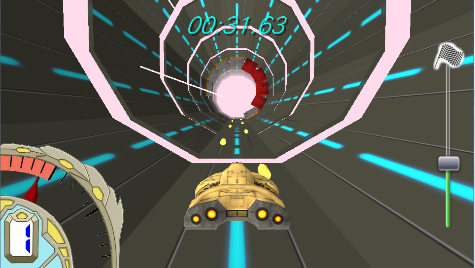
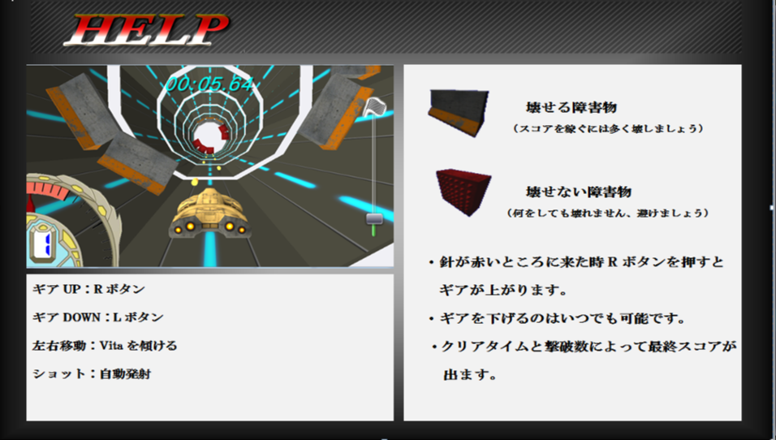

Gallery
このページでは、私がこれまでに制作した作品を紹介します。DriveShooter
【完成日2014.2.21 制作期間120日】
サンプルイメージ
 
作品説明
PlayStationVitaを使ったレースシューティングゲームで、
PlayStationVita本体を傾けることで操作します。
筒状のステージを走り、現れる障害物をショットや
チャージショットで破壊していき、ところどころに空いた穴をかわしながら
ゴールを目指します。
どこを見て欲しいか
初のPlayStationVitaを使ったゲーム。
初の3Dゲーム。
レースとシューティングを掛けあわせた爽快感。
| 開発環境 | C# |
|---|---|
| 使用ツール | PlayStationMobileSDK |